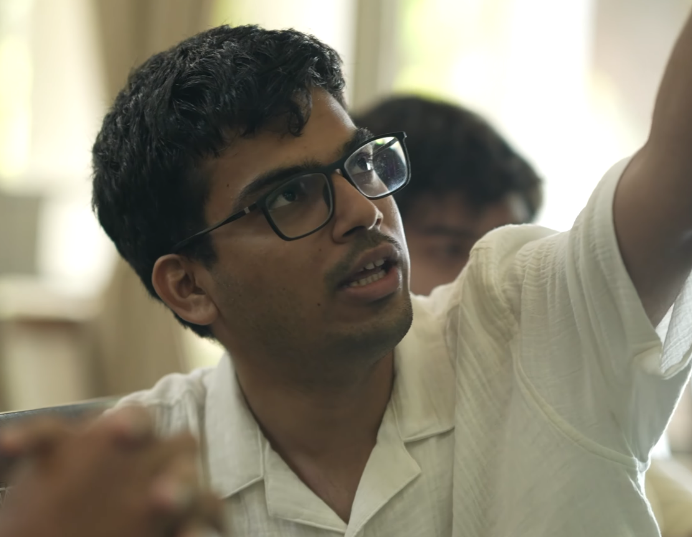

About Me
I am a fifth-year PhD student at the School of Mathematics, Tata Institute of Fundamental Research (TIFR), Mumbai advised by Prof. Anish Ghosh. I am broadly interested in the interplay of dynamics and arithmetic. Before coming to TIFR, I completed my BS-MS at Indian Institute of Science Education and Research (IISER) Mohali.
Research
My research interests include:
- Homogeneous dynamics and applications to number theory, Diophantine approximation
- Extreme value problems arising in homogeneous dynamics and number theory
- (Effective) equidistribution on homogeneous spaces, measure rigidity
Preprints and Publications
Sourav Das, Anish Ghosh, Sundara Narasimhan. "Extreme values and logarithm laws for toral translations" preprint, 2026. [arXiv]
CV
CV will be provided on request.
Contact
Email: sundaranarasimhan[dot]s[at]gmail[dot]com, ssundara[at]math[dot]tifr[dot]res[dot]in